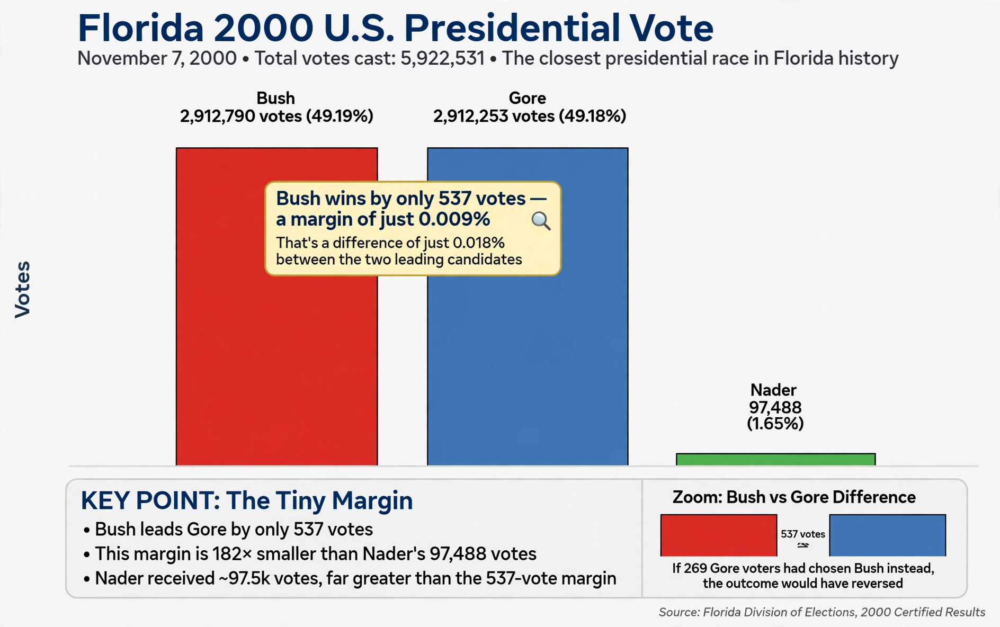

From Wikipedia, the free encyclopedia
In social choice theory, the spoiler effect is the phenomenon whereby a losing candidate changes the outcome of an election by their presence — "spoiling" it for a candidate who would otherwise have won. It is a manifestation of the failure of the independence of irrelevant alternatives. Spoilers are most common under plurality voting: a minor candidate draws votes disproportionately from one major candidate, handing victory to the other.
Frequently cited cases in United States presidential elections include 1912, when Theodore Roosevelt's Bull Moose candidacy split the Republican vote and Woodrow Wilson won; 1992 and 1996, when Ross Perot's candidacy was argued (though disputed by later analyses) to have hurt George H. W. Bush; and 2000, when Ralph Nader's Green Party votes in Florida (97,488) far exceeded George W. Bush's certified margin over Al Gore (537 votes). In 2016, third-party votes again exceeded the winning margins in several decisive states.

The spoiler effect drives strategic voting, as supporters of minor candidates desert them to avoid the worst outcome. Voting systems differ in susceptibility: instant-runoff voting reduces (but does not eliminate) spoiling; Condorcet methods and cardinal systems such as score voting and approval voting are structurally resistant because support for one candidate does not subtract from another's score. The problem was analysed by the Marquis de Condorcet in the 18th century and is central to debates over electoral reform.
Categories: Voting theory · Electoral systems · Paradoxes